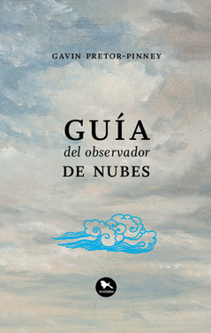

Guía del observador de nubes
Reseña por Jorge I. Zuluaga

Ver reseña en GoodReads (necesita cuenta)
Lo compre hace muchos años cuando sentí mi primer arranque serio por conocer un poco mejor sobre las nubes.
En aquel entonces, como ahora, me rondaba este pensamiento: "te gusta observar las estrellas, pero a las estrellas en tu país no les gusta dejarse ver; o mejor, las nubes no te lo permiten. ¿Por qué no estudiar entonces las nubes para apreciarlas cuando no te dejen ver las estrellas?"
Cuando recientemente se me apareció en un atardecer un Stratocumulus lenticularis –como aprendí en este libro que se llamaban aquellas nubes en forma de platillos voladores de varios pisos que se forman a sotavento entre las montañas– recorde mi propósito de algunos años atrás. Desenterré el bendito librito y decidí comenzar a leerlo. Creo que ya lo había intentado, pero el esfuerzo no había prosperado seguramente porque eran los años en los que no lograba leer más de las 20 páginas que tenía un paper científico.
Lo que nunca imagine es que se tratará de un libro tan ilustrativo, tan bien escrito y tan deliciosamente divertido. La verdad creía que se trataría de una guía más, un simple libro de referencia para saber cómo ponerle nombres a las nubes.
Pero no.
"Guía del observador de nubes" del periodista inglés Gavin Pretor-Pinney es una declaración de amor al aire sobre nuestras cabezas. Un libro de viajes. Un texto de divulgación científica, con mucha física y pocos bostezos. Una guía para aquellas personas que disfrutamos mirar para arriba y deleitarnos con el espectáculo que ofrecen las nubes; o como diría Emerson –y citará Pretor-Pinney– "el extraordinario museo de las alturas". Un libro de historia y de historias sobre las nubes en diversas culturas, en la literatura, en los mitos.
Y también una guía para la identificación de nubes.
¿Se le podría pedir más a un libro sobre nubes?
Tampoco esperaba que el libro fuera algo así como el texto de referencia de los miembros de la Cloud appreciation society, una organización internacional con más de 50.000 miembros en todo el mundo, fundada por el mismo Pretor-Pinney (para las personas interesadas aquí está el sitio web de la sociedad) y que a lo largo de casi 20 años se ha convertido en la más grande organización de "nubofílicos" del planeta.
El libro se organiza alrededor de los 10 tipos de géneros de nubes reconocidos por la Organización Meteorológica Internacional. En cada capítulo el autor describe las características, especies y variedades de cada género y ofrece alguna guía para su identificación.
Bueno, al menos esa es la parte técnica. Y es que, como bien aclara Pretor-Pinney, una [persona] observadora de nubes no es una catalogadora; los [profesionales de la] meteorología ya se ocupan de clasificar por ti los diferentes géneros, especies y variedades de nubes. Lo llaman trabajo. La tuya es una actividad más lúdica y reflexiva.
Por entre las descripciones más científicas, Pretor-Pinney nos ofrece una rica y deliciosa colección de anécdotas, referencias a la literatura, la Historia o los mitos, relacionados con cada tipo de nube, y lo hace con un divertido tono humorístico que te saca más de una risotada.
Si aman la naturaleza y se han sorprendido más de una vez mirando o fotografiando las nubes, hay que conseguir este libro. ¿Que hay de malo en tener la cabeza en las nubes?